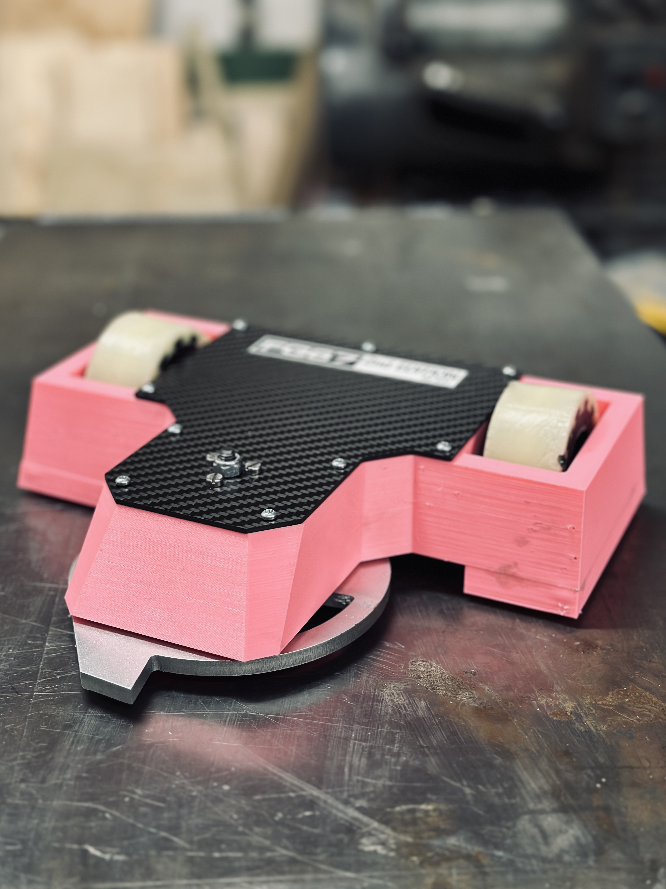
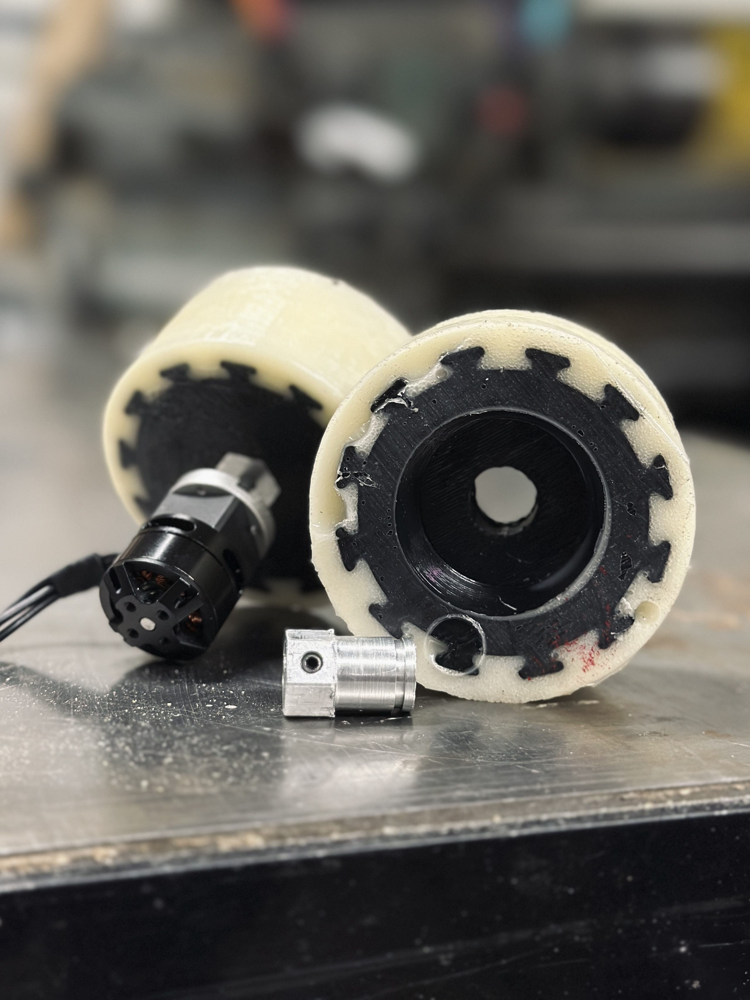
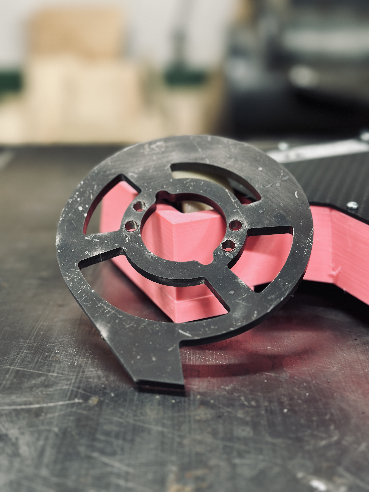
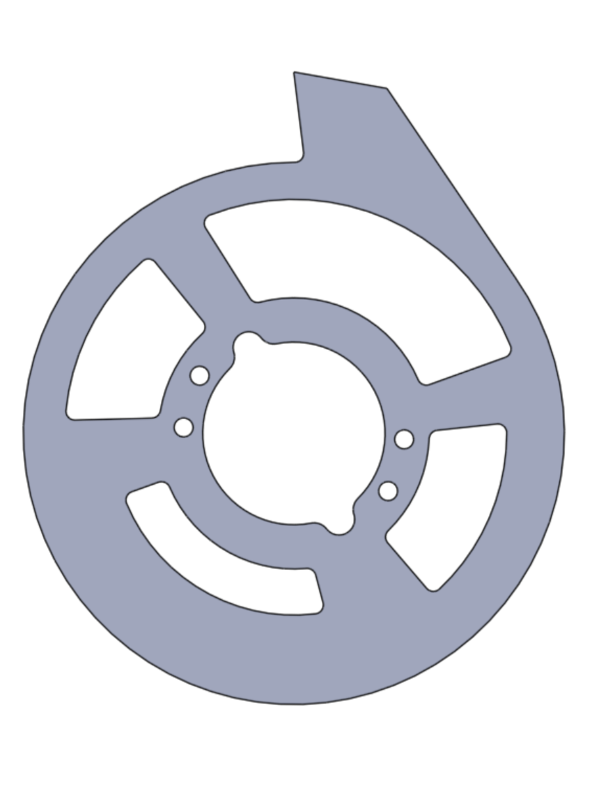

PROBLEM
Develop a weaponized robot architecture that remains controllable and survivable under asymmetric impacts and repeated shock loading.
METHOD
Designed the robot around energy management rather than raw weapon power, using compliance and mass distribution to protect critical components. Evaluated weapon geometry and inertia to shape impact impulse and spin-up behavior instead of maximizing tip speed alone.
RESULT
The robot maintained drivability and weapon consistency after high-energy collisions where rigid designs typically degrade. Design choices reduced failure modes related to shock transmission and post-impact instability.
SKILLS USED
Onshape, MATLAB, 3D Printing, Machining, Soldering